결국 충동구매;;
전에 Canterbury놀러갔을때
무심코 들어갔던 백화점에서 발견 +_+
그리고 여름에 북유럽 여행갔을때
노르웨이 뭉크 미술관 기념품 판매점에서도
진열되어있는걸 보고 대따 반가웠었다^^;;
복싱데이까지 기다리네 참아야하네 어쩌네 하다가
지름신이 격하게 오셔서 오밤중에 카드결제^^;;;
원래 장지갑 보다는
아저씨스러운 젤 간단한 반지갑을 좋아하는데
(동전지갑을 따로 들고다니는 한이 있더라도^^;;)
저번 악세서라이즈것도 그렇고
또다시 장지갑을 구매하게된;;
(학교 프린터 바우쳐라던가 카드라던가 이것저것
마구마구 쑤셔넣고 다니다보니;;)
(어째 나이를 먹을수록 취향이;;;)
요거보자마자 '우워어어~이건 사야해~' 라고 외쳤다능;;
내가 구입한 사이트에서는 상세사진이 없어서
몰랐는데 카드슬롯도 안쪽에 더 있음;; 오우;;
나중에 한국 판매 사이트 보니까
상세페이지 엄청 잘해놨더라;; 역시;;;
(그리고 가격이 2배정도 비쌌다;;;)
이것으로 지갑 3종세트 완성!!!!!
↓요건 공홈에서 퍼온 사진들
(http://mywalit.com)
전에 Canterbury놀러갔을때
무심코 들어갔던 백화점에서 발견 +_+
그리고 여름에 북유럽 여행갔을때
노르웨이 뭉크 미술관 기념품 판매점에서도
진열되어있는걸 보고 대따 반가웠었다^^;;
복싱데이까지 기다리네 참아야하네 어쩌네 하다가
지름신이 격하게 오셔서 오밤중에 카드결제^^;;;
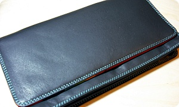
원래 장지갑 보다는
아저씨스러운 젤 간단한 반지갑을 좋아하는데
(동전지갑을 따로 들고다니는 한이 있더라도^^;;)
저번 악세서라이즈것도 그렇고
또다시 장지갑을 구매하게된;;
(학교 프린터 바우쳐라던가 카드라던가 이것저것
마구마구 쑤셔넣고 다니다보니;;)
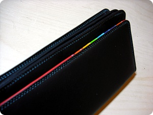
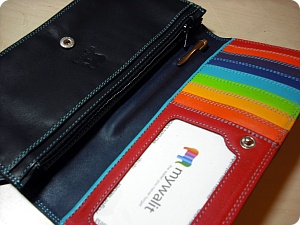
요 색색이 카드 슬롯이 느므느므 내취향///(어째 나이를 먹을수록 취향이;;;)
요거보자마자 '우워어어~이건 사야해~' 라고 외쳤다능;;
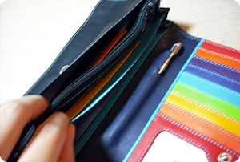
지폐넣는쪽도 공간분할이 꽤 많네용;;내가 구입한 사이트에서는 상세사진이 없어서
몰랐는데 카드슬롯도 안쪽에 더 있음;; 오우;;
나중에 한국 판매 사이트 보니까
상세페이지 엄청 잘해놨더라;; 역시;;;
(그리고 가격이 2배정도 비쌌다;;;)
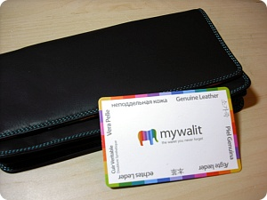
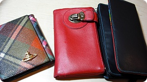
이것으로 지갑 3종세트 완성!!!!!
↓요건 공홈에서 퍼온 사진들
(http://mywalit.com)
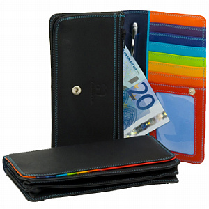
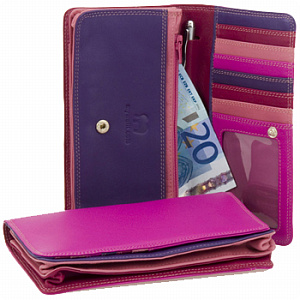
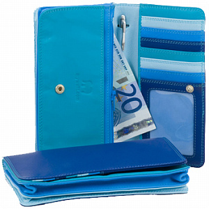
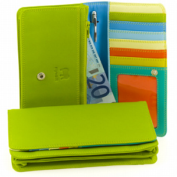
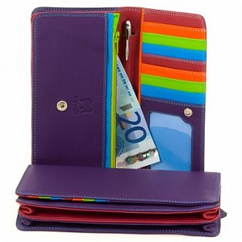
역시 깜장이 젤 이쁘네욤/////훗훗훗(←;;)